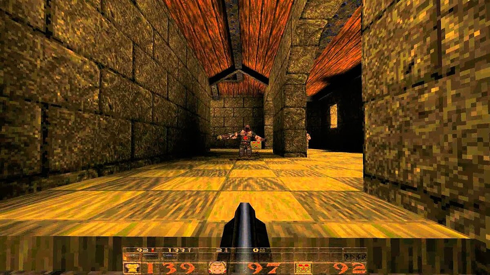
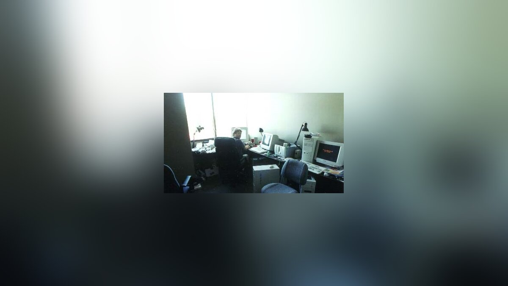
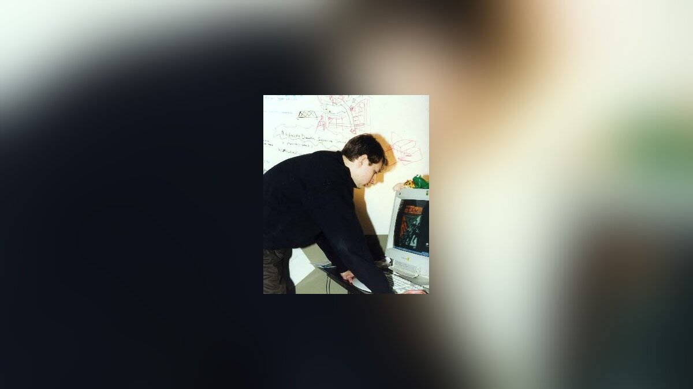
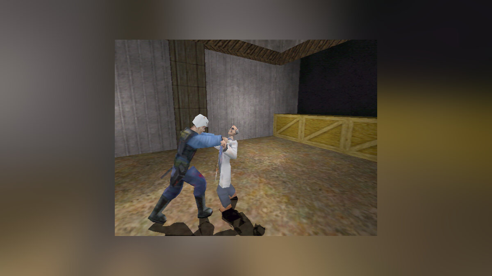
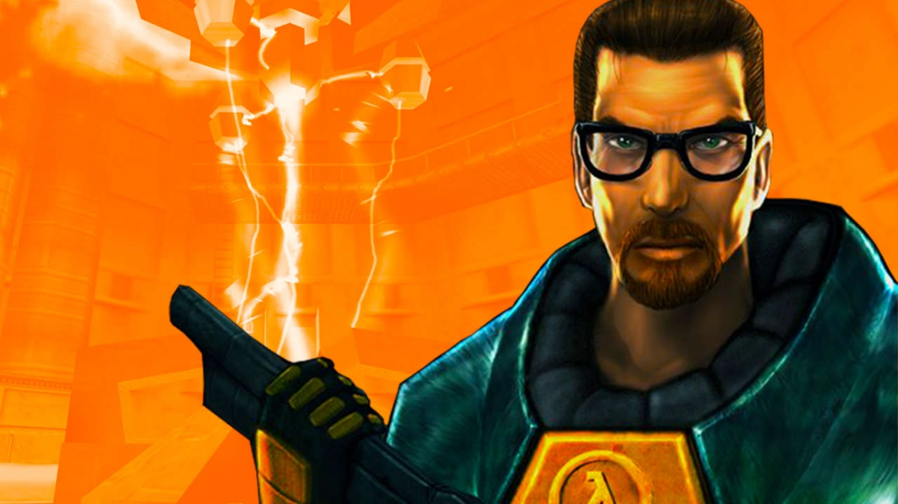
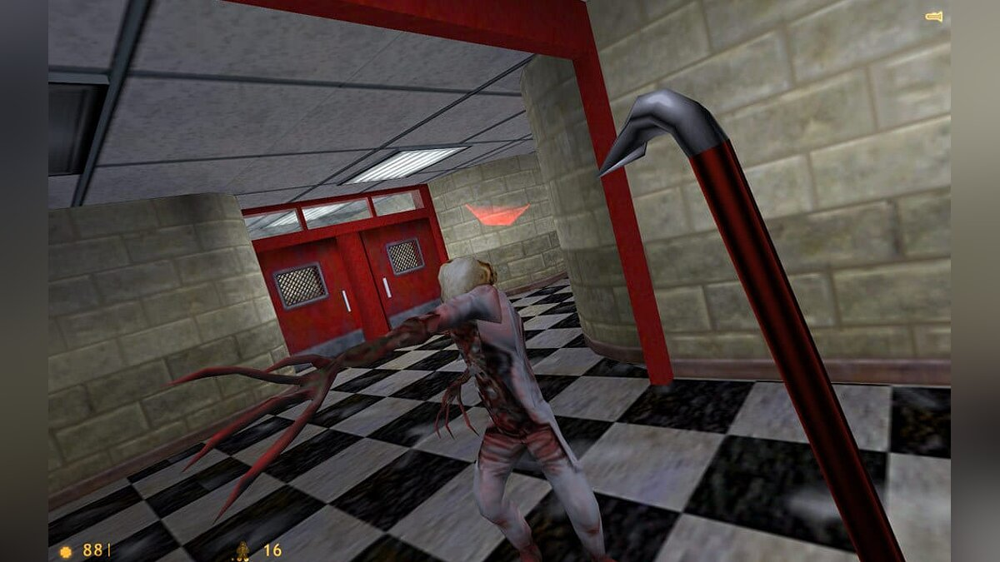

Знакомство с id Software и основание студии
Встреча с руководством id Software прошла не так радужно, как хотелось бы Ньюэллу. Кармак всегда был прагматичным человеком, и предложение Абраша о продаже движка двум неизвестным парням, которые ничего не смыслят в игровой индустрии, воспринял без энтузиазма. Оно и понятно: основатели id к концу 1996 года были настоящими рок-звездами, а от конкурентов и так отбоя не было. Едва ли не все программисты из трущоб хотели урвать кусочек славы id и поэтому клепали свои шутеры под копирку Doom и Quake. А эти хотели не просто шутер, а ещё и на технологиях id Software!

Так что Майкл Абраш долго уговаривал Кармака, пообещал поручится за своих бывших коллег из Microsoft. В какой-то момент Джон согласился, но с условием, что Абраш будет лично курировать разработку вплоть до самого финала и не позволит Ньюэллу и Харрингтону создать ещё один бездушный клон Quake. Ньюэлл был на седьмом небе от счастья.
Основной состав id дал новичкам некоторые наставления по работе игрового бизнеса, показал особенности движка и представил основную документацию по работе с ним. Все считали, что у Ньюэлла и Харрингтона ничего не получится, и что больше о них никто не услышит, поэтому вычеркнули «этих двоих из Microsoft» из списка основных конкурентов. И зря, ведь Гейб с Майком вернулись в Сиэтл с большим энтузиазмом.
Всё шло как по маслу: есть идея, готовый движок и план развития от мастеров геймдева. Осталось придумать название компании и собрать команду. Вариантов было много, и в какой-то момент дуэт уже решил вписать в устав название Hollow Box, но вовремя одумался, справедливо посчитав его идиотским.
Сейчас уже доподлинно неизвестно, кому пришла идея назвать студию Valve. Но, как заявляет сам Ньюэлл, это был самый адекватный вариант из всех предложенных.
Долгий путь к первой Half-Life
Первых сотрудников новоиспеченной Valve наняли по рекомендации id Software. Кармак всегда пристально следил за фанатскими сообществами и набирал в свою команду людей, у которых был явный талант к геймдизайну и созданию карт. Джон посоветовал Ньюэллу придерживаться того же принципа и нанимать разработчиков, которые уже имели дело с движком и разбирались в тонкостях 3D-шутеров.

Персонал Valve формировали из членов фанатских сообществ Quake, перетягивали разработчиков из других студий, нанимали бывших коллег из Microsoft. Харрингтону и Ньюэллу приходилось обеспечивать своих первых сотрудников не только рабочим местом, но и жильём, а заодно обучать нюансам командной работы и другим значимым мелочам, которым в то время в университетах не учили.

Когда первичная команда была сформирована, пришла пора решать, над какой игрой работать. Основной костяк команды состоял из программистов, а не дизайнеров или художников. Поэтому и за дело взялись, прежде всего, с технической стороны. Было решено использовать инновационную по тем временам скелетную анимацию, скриптовые сцены и другие вещи, которые не играли особой роли в шутерах, но потенциально могли повлиять на эволюцию жанра. Никто особо не задумывался, о чём будет игра, как она будет выглядеть, и чем будет цеплять игрока. Из-за этого издатели наотрез отказывались работать с Valve, что сильно било по самолюбию Ньюэлла. Действительно, когда ты всю молодость провёл в Microsoft на вершине IT-индустрии, выпрашивать что-то у издателей наверняка вдвойне неприятно.
Но Valve повезло: один издатель всё же решил поработать с новичками. Это была Sierra On-Line. Компания находилась в постоянном поиске студий, которые могли бы разработать новый экшен и поднять авторитет Sierra в игровом сообществе. Глава издательства Кен Вильямс (Ken Williams) очень жалел, что не купил id, когда у него была такая возможность, поэтому идея новой игры от Valve ему показалась очень перспективной. Но заключить контракт со студией Гейба Ньюэлла лично ему так и не удалось: Вильямс покинул пост, уступив место Скотту Линчу (Scott Lynch).
Последний, выслушав идеи Valve, задал главный вопрос: «А чем ваша игра будет отличаться от Quake, помимо технологических улучшений?» На что получил ответ: сюжетом и проработанной вселенной. Гейб и его команда уверяли, что создают уникальный продукт, который будет связан с хитом от id только движком. Это смогло убедить Sierra подписать контракт на выпуск игры, под названием… Quiver.
На мозговом штурме Ньюэлл озвучил идею для общего сюжета, которую он почерпнул из прочитанной накануне повести Стивена Кинга «Туман» (она же «Мгла»). Местом действия должна была стать военная база, окутанная туманом, из которого появляются монстры, а геймплей — лавировать между сюжетным шутером и хоррором. Идея команде понравилась, и они принялись за работу. Основным нюансом в разработке Quiver было пристальное внимание к сюжету, а посредственное — к самому игровому процессу. Ведь если есть движок, которой хорошо работает в шутерных механиках, то зачем что-то усложнять? Тем более, что Харрингтон не собирался создавать блокбастер и хотел выпустить игру как можно быстрее, а Ньюэлл это понимал. Для начинающей команды важно было выпустить хоть что-нибудь, чтобы заработать хоть какие-то деньги, а уже потом приступить к работе над следующим, по-настоящему большим проектом.

Когда сюжет в Quiver стал основой всего геймдизайна, стали появляться проблемы с движком Quake. В Valve начали понимать, что технологию id придется так или иначе дорабатывать, ибо базовая версия связывала руки как сценаристам, так и дизайнерам. Здесь студии в очередной раз повезло: они нашли талантливого программиста Кена Бёрдвела (Ken Birdwell). Он смог прикрутить к движку скелетную анимацию и проработанную систему искусственного интеллекта, который до сих обсуждают на форумах.
На Е3 1997 года Valve представила свою игру, но уже под другим названием — Half-Life. Журналистам показывали инновационные ИИ и анимацию, скриптовые сцены и расширенные возможности движка Quake. Все были в восторге от увиденного и окрестили первую игру Valve революцией в жанре. Благодаря сарафанному радио о Half-Life вскоре узнало всё игровое сообщество. Казалось бы, вот он успех, пора выпускать игру, но была одна проблема… игры как таковой не существовало.

Подобная ситуация еще не раз повторится, но на момент презентации Half-Life была, по сути, лишь техническим демо, набором функций без чёткой системы. А тут еще и id выпустила Quake 2, в очередной раз совершив революцию в жанре шутеров. Сотрудники Valve были в панике: Sierra требует игру, которая будет лучше и технологичнее Quake 2, а Half-Life структурно едва дотягивает до первого Quake с продвинутыми анимациями! И тогда Гейб принял непростое решение отложить релиз устаревшей ещё до выхода игры и полностью её переделать. Это очень сильно повлияло на отношения Valve с издателем. Ведь PR-машина была уже запущена, а игроки ждали игру не позже, чем к Рождеству 1997 года.
Несмотря на риск, Гейб несколько раз переносил релиз. Сначала он был назначен на весну, потом на июнь, на осень — и вот уже в который раз игру переносят на Рождество 1998 года. Всё это время Гейбу и Майку приходилось финансировать игру из своих карманов. Провал Half-Life мог стать главной ошибкой выходцев из Microsoft. Масла в огонь подливал издатель, который уже не верил обещаниям и просил Valve показать хоть что-нибудь. И они показали. Фрагмента геймплея на E3 1998 Half-Life хватило, чтобы получить награды как лучший экшен и лучшая игра для ПК. Успех у зрителей мотивировал разработчиков, и они приступили к финальной шлифовке проекта.

Незадолго до релиза Valve приняла решение выпустить Half-Life: Day One — и это было отличное решение. Небольшая демоверсия, которая распространялась вместе с аппаратным обеспечением, за считанные дни попала в интернет, а затем распространилась по всему миру. О ней не говорил только ленивый. Даже разработчики из id, увидев, что будет представлять собой Half-Life, поднапрягись, ибо на горизонте маячил конкурент титанического масштаба.
Окончательную дату релиза нельзя было поменять уже никак. Последний месяц перед релизом стал настоящим кошмаром для сотрудников Valve. Разработчики буквально жили в студии, пытаясь избавиться от критических ошибок и багов. Харрингтон как ключевой программист работал безвылазно по 15 часов в сутки и даже отпустил бороду, чтобы не тратить время на бритьё. В итоге ловля багов была окончена, игру отправили в тестирование, а следом — и на золото.

Сказать, что после выхода Half-Life взорвала игровой мир, всё равно, что не сказать ничего. Одни из самых высоких оценок в истории, уйма наград, миллионные продажи и всеобщее признание — мучения разработчиков были вознаграждены. Именно тогда Ньюэлл назовет Half-Life удачным стечением всех обстоятельств, от встречи с id до появления игры на прилавках. И пока Half-Life остается главным талисманом Valve, удача их не покинет.